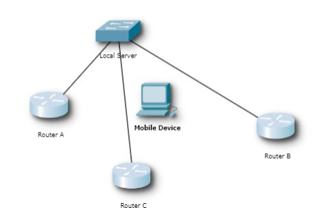

According to Madray (2020 p. 533) “The $1000 billion Event management or event planning industry is one of the most affected industry of this pandemic globally” and understandably so with most countries in the world placing the legal responsibility on industry to incorporate social distancing measures. With the recent policy shift from the Scottish government on making capacity management and crowd control measures the main NMI (Non-Medical Intervention) defence against COVID-19 instead of social distancing, it is more important than ever to provide technology solutions to monitoring crowd levels (Garg, Bansal and Padappayil, 2020; Jaiswal, Agarwal and Negi, 2020).
Mass Gatherings (MGs) are a natural evolution of human society as we move further into metropolitan areas. Yet even without the COVID-19 pandemic MG’s are a massive health risk, with it being incredibly difficult to get emergency crews into an incident zone in an MG. Mass gatherings also have an increased risk for such incidents to happen in the first place. During the January 6th riot in Washington D.C. failings by Capitol Police to inhibit restrictions on this Mass Gathering led to emergency services being overwhelmed, multiple people being trampled and ultimately a protester losing their life. Potentially with more data on crowd size available to law enforcement, deaths could have been prevented. With such consequences for getting crowd management wrong, it is imperative that we fully utilise technology to reduce the risks of Mass Gatherings (Johansson et al., 2012; Milani et al., 2021).
This research is important to the post-COVID venue planning world as the research addresses the need for adequate social distance monitoring in large outdoor areas where traditional methods of counting the number of people in the venue are not possible. This Research would reduce the number of people needed for crowd control and crowd management in large outdoor spaces. This research could be used to reduce the need for “door counters” or turnstiles in gated events. Site operators can benefit from this research as they will have reduced staffing costs, and this will also reduce the stress and workload of other staff. Site-goers will benefit from this as the site operators can choose to make their capacity information public and therefore site-goers can avoid long queues. The general area will benefit as there will be fewer people in such area and therefore will be less human waste and damage to the area.
There is a rightful cause for concern when developing technology solutions for crowd control, especially with the rise of authoritarian regimes across the world. My technology will be developed open source which makes it harder for it to be used maliciously by such countries. My research will use the same ethos of the TOR browser, with the more people in the crowd making it harder to find an individual, at no point in my finished technology should an individual “user” be able to be tracked (Dingledine, Mathewson and Syverson, 2004).
This research is to use IoT probing to check how many devices are in a certain area and therefore due to the high number of smart cell phone usage in western (European and North American) society’s we can use this data to estimate the number of individuals in a certain area. During my research, I will look at Capacity Management Software, IoT Probing, Raspberry Pi/Miniaturised Computing devices and potentially IoT signal strength triangulation. This has certain limitations, i.e. the lack of ability to assess demographics that are not traditionally mobile users such as children. This means that despite a large majority of the population owning a smart cellular device (Moreno et al., 2019). The figures raised by this process will be slightly inaccurate outside of testing. Therefore, due to the limitations of this, very little research has been done into the concept of Wi-Fi Probing to assess the number of devices in one area. This project is important as in the post-COVID venue planning world social distancing and capacity management is key for abiding by local laws and regulations. Such as ensuring that outdoor venues do not exceed the requirements for vaccination passports to be needed or during local lockdown periods where venue capacity is strictly limited, and organisers penalised financially for exceeding capacity.
This research aims to find the definitive solution to finding out how many people are in an open area using IoT Sensor Smart Capacity management. This research is to use IoT Sensors to check how many devices are in a certain area. This research will aim to study existing IoT sensor techniques and existing capacity management techniques to Implement such technologies into a prototype capacity management system. This research also will aim to reduce the potential for this technology to be used maliciously by treating all data as anonymous therefore reducing the potential for persons to be tracked and prosecuted for illegal gatherings.
Capacity management is one of the biggest issues facing metropolitan areas and tourist destinations today. With the worlds urban population estimated to grow by more than 3 billion by 2050, the massive urbanisation of the world's population will only contribute to this problem. With Mass Gatherings being natural to cities, it is glaringly obvious that these crowds will get bigger in cities. Mass Gatherings can also be found at most high profile tourist destinations, with the largest crowds causing significant amounts of pollution in the local area. These issues call for new management mechanisms for crowds and public spaces, especially those exploiting IoT Sensor Technology and big data (Buhaug and Urdal, 2013; Zhao and Min Li, 2018; Hassanein et al., 2019).
Currently, there are multiple ways to go about a technology approach to this issue, one of the more glamourous methods is the use of unmanned vehicles (both air and ground) to monitor these crowds. This solution is not suitable for this use case for the following reasons: Noise pollution may cause more harm to the local environment from UAVs than tourists, UAV/UGVs are extremely susceptible to vandalism and cannot be concealed, lack of capability under restricted airspace, and this method is incredibly expensive compared to other more cost-sensitive solutions with consumer drones costing upwards of £400 (Khaleghi et al., 2014; Jackman, 2019).
One solution that is relatively low cost (especially compared to cameras), has been the incorporation of IoT signal tracking. This finds phones in the range of a network and subsequently tracks the number that can connect to the network. This Radio Frequency approach is incredibly useful from a cost perspective as most small board devices are able to connect to the internet, creating a low-cost platform to base the system from. Using this approach we can also reach areas that are inaccessible to cameras such as low light environments or areas with inconsistent heat for IR methods. One sufficient downside of this method is the assumption that everyone in the crowd has a mobile device that isn’t in aeroplane mode (although this could be used as a way to opt-out of the surveillance without restricting the local right of way). This solution also de-personalises the data to eliminate the potential for users to be tracked back from a mass gathering using their phone's data (Yuan, 2014).
In Yuan’s 2014 paper (Yuan, 2014) an experiment was done utilising both Wi-Fi and Bluetooth technology to estimate how many persons were inside of an office. During this experiment, the number of people in the crowd spanned between 3 and 12. This experiment was carried out with various smartphones, with the base OS being android. The Wi-Fi signal strength was recorded twice per second. All mobile devices were placed into trouser pockets and individuals would do a range of movements (including; moving freely, meeting other participants, merging with other participants and dividing from other participants). This experiment was designed to test a range of situations as detailed in the range of experiments table [figure 1] (Yuan, 2014).
| SA: 1 crowd consist of 3 persons |
|---|
| SB: 1 crowd consist of 12 persons |
| SC: 2 crowds each consist of 6 persons |
| SD: 1-3 crowds constructed with changed persons |
Figure 1, range of experiments (Yuan, 2014)
As seen in the accuracy results [Figure 2], this experiment was highly effective at giving somewhat accurate readings of crowd levels. This would be more than adequate compared to counting individuals manually due to the reduction of human error. This report is an excellent example of how this paper can combine both technologies into an accurate crowd detection system, and is a clear proof of concept. Where this research fails is in its assumption of all individuals enabling Bluetooth and downloading the application. Therefore it is ineffective at crowd management in large open spaces where we cannot guarantee all individuals have downloaded an application or have Bluetooth enabled.
| Crowd Level and density | SA | SB | SC | SD |
|---|---|---|---|---|
| SA | 94% | |||
| SB | 91% | |||
| SC | 95% | |||
| SD | 89% |
Figure 2, accuracy results from experiments (Yuan, 2014)
Currently, to find devices in an area using IoT/RF Sensor Technology there are 2 main solutions, Bluetooth and Wi-Fi with many projects using both(Yuan, 2014).
Bluetooth is a useful technology for estimating crowd density by inspecting the number of Bluetooth Device Address’s (BDAs) these are 48-bit Mac addresses that are used for communicating between devices. This is also useful if we want to use multiple receivers as mac addresses can be stored and duplicates deducted from the final amount of devices. It should be noted that phones must be in discoverable mode for this method to work properly (Yuan, 2014; Sharma et al., 2018).
Although Wi-Fi probing is less accurate than Bluetooth searching Wi-Fi has a much larger range than Bluetooth with ranges between 35m (Indoors) and 100m (Outdoors). However according to Zhou et al, (2020 p.4442) “it is more likely for a mobile device to have its WiFi turned on instead of its Bluetooth” therefore overall Wi-Fi will be much more accurate at predicting crowd density through probing. Utilising Wi-Fi probing also reduces the need for hardware to be given to users such as tracking bracelets described in (Jabbari et al., 2019). Wi-Fi probe requests are sent by devices over time to try to find other Wi-Fi signals. These signals contain essential information about the devices that are sending the data, such as their MAC Addresses. These addresses are essential to helping eliminate duplicate signals when parsing the data as they are unique to the device. Although devices that use randomised MAC addresses are on the rise, this should not affect this project as we are only trying to identify the device as existing in the space, not trying to get more data than necessary from these devices as this would cause privacy concern and would increase the potential for the finished product to be used maliciously (Sharma et al., 2018; Jabbari et al., 2019; Zhou et al., 2020). One advantage of Wi-Fi is the versatility of the system, as this projects main mission is to detect users outdoors, the technology could be used on a smaller scale indoors. This allows the use of smaller- scale testing indoors, which is cheaper and more controlled than in an outdoor environment(Zhou et al., 2020)
Wi-Fi positioning systems are set up to find and position local devices on a map of the area. One popular method of doing this is via a heatmap, this allows users to remain anonymous to the map reader while allowing more in-depth information to be given to the organisers of the event/area. This would work in a mesh-like configuration as seen in my analysis of the network [Figure 3]. Not only would this increase the accuracy of the results (as if a router misses the signal another can pick it up) having 3 routers also enables the ability to utilise signal strength to estimate the location of a specific device. One concern with this is the ability of this technology to be misused by bad actors (Lashkari, Parhizkar and Ngan, 2010; Zhou et al., 2020).
Figure 3, CISCO Packet Tracer analysis of the network.
Due to the large privacy concerns and the potential for bad actors, it would be inappropriate and immoral to utilise signal strength to track mobile devices due to anonymity issues. However, we can use this multiple router technique to increase the accuracy of the system as a whole.
There are multiple low-cost platforms that we can use to create this system. The Raspberry Pi brand of mini-computers is ideal for this scenario so I will look at 2 of their major boards. Another ideal board for this is the Arduino family of boards. I have chosen these 3 models to compare due to their general availability and rich documentation.
| Platform | RAM | CPU | Non Modular Wi-Fi Range |
|---|---|---|---|
| Raspberry Pi Zero | 512 MB | 1 GHz | 0M |
| Raspberry Pi 4B | 2-8 GB | 1.5 GHz | 35-100M |
| Arduino | 32 KB | 16 MHz | 0M |
(Arduino, 2021; Raspberry Pi, 2021)
The Raspberry Pi Zero is one of the cheapest boards on the market currently starting at $10. One would assume that there would be a considerable drop in the quality of parts, however due to the mass production methods employed by The Pi Foundation, this is not the case. This would require the addition of a Wi-Fi module however, due to the low cost of such modules this would still work out cheaper than a Raspberry Pi 4 (Yamanoor and Yamanoor, 2017; Kurniawan, 2019).
Although the argument can be made that a Raspberry Pi 4 is “Overkill” for a project such as mine, due to the issues regarding wifi range on the Pi Zero it is appropriate to utilize this as a solid base board. Unfortunately, there is a significant research gap on the range of the Raspberry Pi 4, with data generally unreliable being from forum posts. Due to the higher power usage of the board, we can use more resource-intensive modules making the range of the Wi-Fi stronger. The Raspberry Pi 4 is considerably more expensive than its sibling (Raspberry Pi Zero) however due to current stock levels of Raspberry Pi 4 kits within the university, this is not a major issue. (Kim, Lim and Kim, 2016).
Arduinos are incredibly versatile and are easily accessible by the university however they are very modular and the setting up of these devices may distract from the overall goals of the project. This modularity allows for the use of 3rd party WiFi cards with 100m-300m range however, this will also make it more difficult for the software to be easily developed upon by others as organisations looking to implement Capacity Management may prefer more robust solutions with fewer variables to potentially go wrong (Arduino, 2021).
Due to the nature of this research being funded in part by the government, it would be unethical to profit off of this by making this end product closed-source. Therefore, this paper will look at the feasibility of 3 major licenses to check their compatibility with this research and the ethical goals for its use.
MIT Licensing allows permission to all (free of charge) to use, copy, modify, merge, publish, sublicense and sell copies of the software. This could work for this research however, it has little protection for this software to be used maliciously and commercialised and will make it difficult for developers to find the original paper referencing the software, thus becoming a documentation issue(MIT, 2021).
GPL licencing is similar to MIT, with the main difference being that GPL licencing requires all subsequent code to remain under GPL license. This reduces the risks of commercialisation and negative modification of the software, as those doing so will have to keep it open source. This is ideal for this project (Lerner, 2005).
BSD Licencing allows similar rights to the MIT License as long as the underlying code remains accredited to the original holder, this however does not have the same protections against malicious use that GPL does (Lerner, 2005).
In conclusion, it is more important than ever to provide technology solutions to monitoring crowd levels. This technology solution is to utilise basic capacity management techniques incorporating IoT Wi-Fi Probing to estimate the number of persons in one particular area. Although this research will not widely adopt Wi-Fi positioning, the utilisation of multiple routers can increase accuracy drastically and therefore it is imperative we learn from this section of the research to try to utilise more than one access point where possible. The board this research will continue on be the Raspberry Pi 4 due to its high versatility and built-in Wi-Fi capabilities. This research will be published on the GPL License due to its safeguards and ability to let genuine users adopt the software without fear of malicious use or mass commercialisation. This is incredibly important to the overall project as this research could lead to crowd tracing, which is not at all what this research is about. This research is to help give data to authorities and businesses on how large crowds are without the need for expensive equipment or vast estimations.
Future work could be developed on how to create solutions to Bluetooth’s range issue, and how we can get wider usage of Bluetooth enabled devices.
Furthermore, more work must be done on how we can use figures raised by the finished project to estimate real crowd size instead of the crowd size of those that have such devices. This could be potentially done with a machine learning algorithm that is trained on both real crowd size and estimated crowd size. This would create a much more accurate picture of the crowd and would therefore be much more useful to those involved.
Arduino (2021) Main Products, Arduino. Available at: https://www.arduino.cc/en/Main/Products (Accessed: November 10, 2021).
Buhaug, H. and Urdal, H. (2013) “An urbanization bomb? Population growth and social disorder in cities,” Global Environmental Change, 23(1). doi:10.1016/j.gloenvcha.2012.10.016.
Dingledine, R., Mathewson, N. and Syverson, P. (2004) Tor: The Second-Generation Onion Router. doi:10.21236/ADA465464.
Garg, C., Bansal, A. and Padappayil, R.P. (2020) “COVID-19: Prolonged Social Distancing Implementation Strategy Using Blockchain-Based Movement Passes,” Journal of Medical Systems, 44(9). doi:10.1007/s10916-020-01628-0.
Hassanein, H. et al. (2019) “Crowd Management,” IEEE Communications Magazine, 57(4). doi:10.1109/MCOM.2019.8703458.
Jabbari, A. et al. (2019) “ICE-MoCha: Intelligent Crowd Engineering using Mobility Characterization and Analytics,” Sensors, 19(5). doi:10.3390/s19051025.
Jackman, A. (2019) “Consumer drone evolutions: trends, spaces, temporalities, threats,” Defense & Security Analysis, 35(4). doi:10.1080/14751798.2019.1675934.
Jaiswal, R., Agarwal, A. and Negi, R. (2020) “Smart solution for reducing the COVID‐19 risk using smart city technology,” IET Smart Cities, 2(2). doi:10.1049/iet-smc.2020.0043.
Johansson, A. et al. (2012) “Crowd and environmental management during mass gatherings,” The Lancet Infectious Diseases, 12(2). doi:10.1016/S1473-3099(11)70287-0.
Khaleghi, A.M. et al. (2014) “A dddams-based UAV and UGV team formation approach for surveillance and crowd control,” in Proceedings of the Winter Simulation Conference 2014. IEEE. doi:10.1109/WSC.2014.7020131.
Kim, D.H., Lim, J.Y. and Kim, J.D. (2016) “Low-Power, Long-Range, High-Data Transmission Using Wi-Fi and LoRa,” in 2016 6th International Conference on IT Convergence and Security (ICITCS). IEEE. doi:10.1109/ICITCS.2016.7740351.
Kurniawan, A. (2019) “Introduction to Raspberry Pi,” in Raspbian OS Programming with the Raspberry Pi. Berkeley, CA: Apress. doi:10.1007/978-1-4842-4212-4_1.
Lashkari, A.H., Parhizkar, B. and Ngan, M.N.A. (2010) “WIFI-Based Indoor Positioning System,” in 2010 Second International Conference on Computer and Network Technology. IEEE. doi:10.1109/ICCNT.2010.33.
Lerner, J. (2005) “The Scope of Open Source Licensing,” Journal of Law, Economics, and Organization, 21(1). doi:10.1093/jleo/ewi002.
Milani, E. et al. (2021) “109 Novel Weapons Employed During Recent Civil Disturbances in Washington, DC,” Annals of Emergency Medicine, 78(4). doi:10.1016/j.annemergmed.2021.09.119.
MIT (2021) https://opensource.org/licenses/MIT, OpenSource.org. Available at: https://opensource.org/licenses/MIT (Accessed: November 10, 2021).
Moreno, M.A. et al. (2019) “Perspectives on Smartphone Ownership and Use by Early Adolescents,” Journal of Adolescent Health, 64(4). doi:10.1016/j.jadohealth.2018.08.017.
Raspberry Pi (2021) “https://www.raspberrypi.com/products/.”
Sharma, D. et al. (2018) “A review on technological advancements in crowd management,” Journal of Ambient Intelligence and Humanized Computing, 9(3). doi:10.1007/s12652-016-0432-x.
Yamanoor, N.S. and Yamanoor, S. (2017) “High quality, low cost education with the Raspberry Pi,” in 2017 IEEE Global Humanitarian Technology Conference (GHTC). IEEE. doi:10.1109/GHTC.2017.8239274.
Yuan, Y. (2014) “Crowd Monitoring Using Mobile Phones,” in 2014 Sixth International Conference on Intelligent Human-Machine Systems and Cybernetics. IEEE. doi:10.1109/IHMSC.2014.71.
Zhao, J. and Min Li, S. (2018) “THE IMPACT OF TOURISM DEVELOPMENT ON THE ENVIRONMENT IN CHINA,” Acta Scientifica Malaysia, 2(1). doi:10.26480/asm.01.2018.01.04.
Zhou, Y. et al. (2020) “Understanding Crowd Behaviors in a Social Event by Passive WiFi Sensing and Data Mining,” IEEE Internet of Things Journal, 7(5). doi:10.1109/JIOT.2020.2972062.